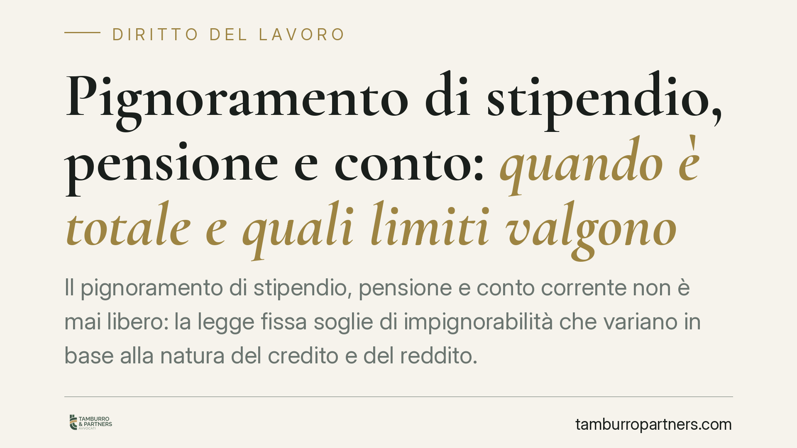

Pignoramento di stipendio, pensione e conto: quando è totale e quali limiti valgono
Il pignoramento di stipendio, pensione e conto corrente non è mai libero: la legge fissa soglie di impignorabilità che variano in base alla natura del credito e del reddito. Capire quando l'aggressione può diventare totale, e quando invece resta parziale, è decisivo per chi subisce un'esecuzione. Ecco il quadro aggiornato dei limiti e degli errori più frequenti.

Il quadro generale
Quando un creditore ottiene un titolo esecutivo può aggredire il reddito e i risparmi del debitore. La legge, però, non consente il prelievo integrale: l'art. 545 c.p.c. individua le somme parzialmente o totalmente impignorabili, distinguendo tra retribuzioni, pensioni e altre entrate.
La regola cardine per lo stipendio del lavoratore dipendente è quella del quinto: lo stipendio può essere pignorato nella misura massima di un quinto (20%) per i crediti ordinari. La stessa frazione vale, in via generale, per le pensioni, ma con un correttivo importante che vedremo subito.
Pensioni: il minimo vitale
Per le pensioni opera una tutela ulteriore: è impignorabile una quota corrispondente al minimo vitale, individuato nel doppio dell'assegno sociale. In concreto, la parte di pensione pari a quella soglia non può essere toccata; solo l'eccedenza è aggredibile, e comunque nel limite del quinto.
Su questo punto va usata cautela nelle citazioni: la disciplina è contenuta nell'art. 545 c.p.c. nella formulazione vigente, ma l'esatta numerazione del comma è cambiata a seguito delle riforme. Consigliamo di fare riferimento all'articolo nel suo complesso, verificando il testo aggiornato, anziché a un comma specifico che può risultare non più corrispondente.
Da ricordare inoltre che l'importo dell'assegno sociale è rivalutato ogni anno: la soglia del minimo vitale va quindi ricalcolata sui valori dell'annualità di riferimento, non su cifre fisse.
Crediti fiscali: gli scaglioni dell'Agente della Riscossione
Quando a procedere è l'Agenzia delle Entrate-Riscossione per crediti tributari, non si applica il quinto secco, bensì gli scaglioni previsti dall'art. 72-ter del d.p.r. 602/1973. Si tratta di una disciplina speciale che sostituisce la regola ordinaria.
Secondo tale meccanismo, la misura pignorabile cresce per fasce di reddito: una frazione ridotta per gli stipendi più bassi, un decimo o un settimo per le fasce intermedie, fino al quinto per gli importi superiori. È essenziale evitare la confusione, ricorrente anche negli atti, tra quinto ordinario e scaglioni fiscali: per la Riscossione valgono sempre gli scaglioni.
Anche qui una nota di aggiornamento: i valori delle soglie di reddito (storicamente ancorati a 2.500 e 5.000 euro mensili) vanno verificati alla luce delle eventuali modifiche normative, prima di applicarli a un caso concreto.
Il concorso di più crediti
Quando concorrono cause di diversa natura — ad esempio un credito alimentare insieme a un credito ordinario — la legge fissa un tetto complessivo: il pignoramento non può superare, nel cumulo, la metà della retribuzione. La disposizione è contenuta nell'ultimo comma dell'art. 545 c.p.c. Anche in questo caso, data la nuova numerazione post-riforma, è preferibile citare l'articolo nella formulazione vigente senza legarsi a un numero di comma che potrebbe non corrispondere.
Il conto corrente
Un errore frequente è confondere il pignoramento alla fonte (presso il datore o l'ente pensionistico) con quello del saldo di conto corrente. La disciplina introdotta dal d.l. 83/2015 e trasfusa nell'art. 545 c.p.c. distingue due ipotesi.
Per le somme già accreditate sul conto prima del pignoramento, è impignorabile l'importo pari al triplo dell'assegno sociale; l'eccedenza è aggredibile per intero. Per gli accrediti successivi al pignoramento, restano invece operanti i limiti ordinari (quinto o scaglioni).
Il problema della prova
Sul conto corrente il vero nodo è probatorio. La banca non distingue automaticamente tra stipendio, pensione e altre entrate: vede solo un saldo. Sta al debitore dimostrare la provenienza delle somme e la data degli accrediti, per invocare la soglia di impignorabilità. Senza documentazione (buste paga, cedolini, estratti conto), la tutela rischia di restare sulla carta.
Cosa fare in concreto
- Verificate la natura del credito: distinguete subito se il pignoramento proviene da un creditore ordinario o dall'Agenzia delle Entrate-Riscossione, perché cambiano le regole applicabili.
- Recuperate la documentazione bancaria: procuratevi estratti conto e cedolini che provino origine e data degli accrediti, indispensabili per opporre le soglie di impignorabilità.
- Controllate i valori aggiornati: ricalcolate assegno sociale e scaglioni fiscali sull'annualità corrente, non su importi storici.
- Contestate gli eccessi: se il prelievo supera i limiti di legge, valutate una tempestiva opposizione all'esecuzione o agli atti esecutivi.
- Non attendete: i termini per reagire sono brevi e la mancata reazione consolida il pignoramento.
Disclaimer
Contributo informativo a cura di Tamburro & Partners - Avv. Giuseppe Tamburro. Non costituisce parere legale.
Ogni storia di lavoro ha i suoi tempi.
Se gestisci HR e vuoi un confronto su contenzioso, ispezioni o licenziamenti, scrivi allo studio. Ti rispondiamo entro un giorno lavorativo.